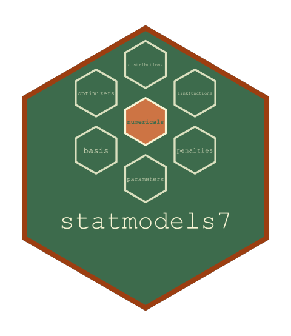

The Variance of the Estimated Hyperparameters
Source:R/outer_hessian.R
hyper_variance.RdInverts the negative of the outer criterion's Hessian, holding any coordinate whose own curvature cannot produce a variance.
Usage
hyper_variance(A, schur = 1e-04, at_edge = integer(0))Value
A matrix of the same shape as A with the variance in the kept
rows and columns and NA elsewhere, or NULL when no coordinate is
usable or the coupling is too large to ignore.
Details
At a maximum the criterion's Hessian is negative definite and its negative inverts to a variance. A hyperparameter driven to the edge of its range, or one the search left before reaching a maximum, has a curvature there that is zero or of the wrong sign, and no variance follows from it.
Such a coordinate used to cost every other one its standard error, the
whole matrix being refused. It is held instead and the rest is inverted,
which is the variance CONDITIONAL on it — the same reading vcov() gives
a coefficient the information carries nothing about. That is the marginal
variance only where the coupling contributes nothing to the kept
curvature, so the Schur correction \(A_{kb}A_{bb}^{-1}A_{bk}\) is
computed and compared against the kept diagonal rather than assumed
negligible; above schur the whole matrix is refused as before. The
default is the size at which the correction cannot move the four
significant digits the summary prints.
A variance is returned only where the matrix inverted is positive
definite, which is read off the smallest eigenvalue of the matrix
equilibrated to a unit diagonal. A positive diagonal of the inverse is
not enough: an indefinite matrix can have one. Measured on a
zero-inflated negative binomial with a random effect on each equation,
stopped where the criterion's curvature has an eigenvalue of -5 on that
scale, every diagonal entry of A was negative and the inverse's diagonal
was positive, so the two standard deviations were reported with standard
errors of 0.015 and 0.0009 on the free scale.
A coordinate the certificate names at the edge of its range is held whatever its curvature, and the Schur test is not applied to it: there the criterion has stopped moving in it, so its curvature and its coupling to the others are below the resolution of the criterion. Measured on two correlated random intercepts whose correlation runs to one, at an angle of -9.14 the analytic coupling of the angle to the two standard deviations read 3.9e-3 and 5.2e-3 beside its own curvature of 8e-7, while the criterion differenced by refitting read 1.2e-3 and -2.5e-6 at a step of 0.05 and -5.0e-5 and 1.3e-4 at a step of 0.2. That coupling made the whole matrix indefinite, and the two standard deviations lost their standard errors to a coordinate whose own were already missing.
See also
statmod_hyper_vcov(), its only caller.